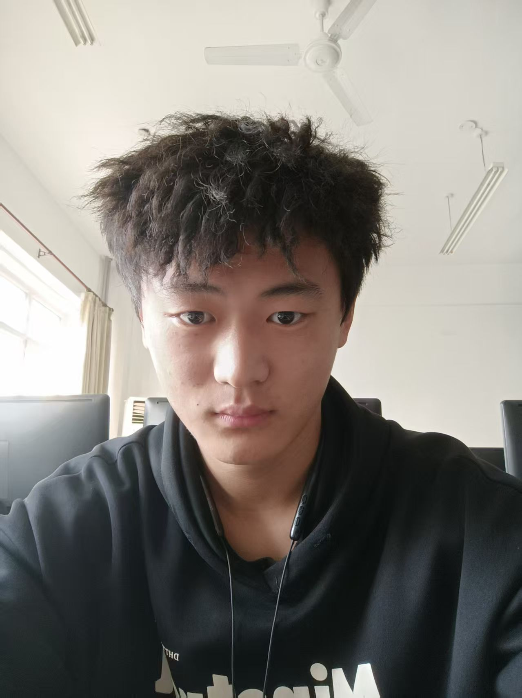
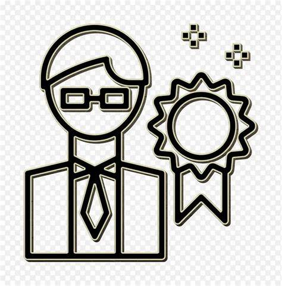
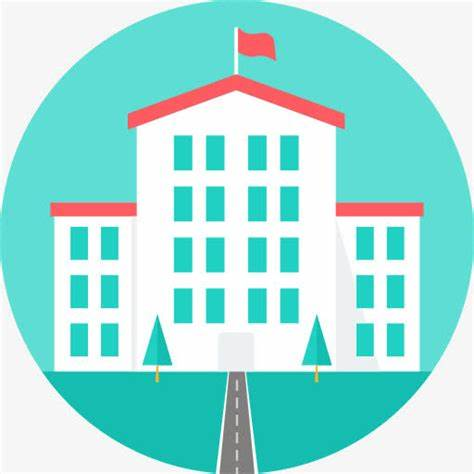
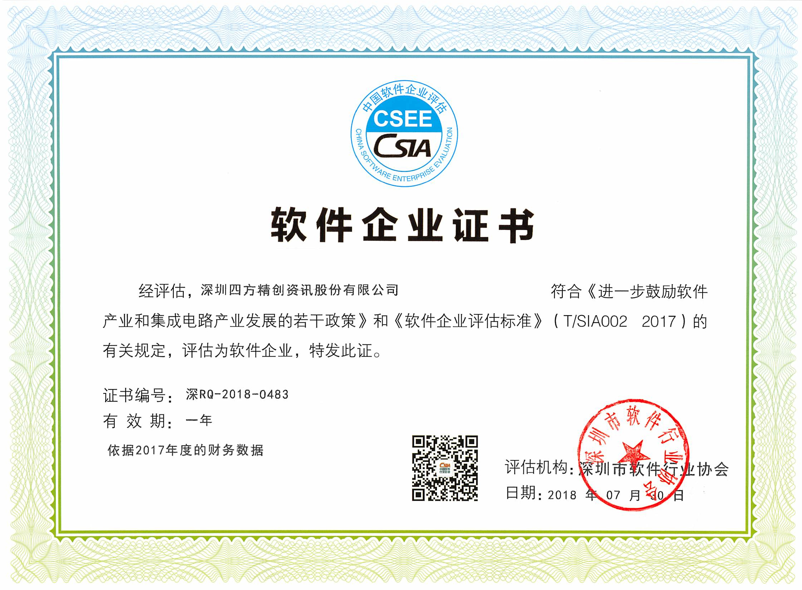

| 个人简历 |
| 姓名 |
李万琪 |
性别 |
男 |
年龄 |
19 |
 |
| 籍贯 |
山东省 |
联系电话 |
18863850810 |
电子邮箱 |
2279542593@qq.com |
| 学历 |
本科 |
健康情况 |
健康 |
婚姻状况 |
未婚 |
| 求职意向 |
高层人物 |
专业 |
软件工程 |
毕业院校 |
鲁东大学 |
| 技能证书 |
软件工程：需求分析（UML建模）、软件架构设计（微服务/分布式）、持续集成/持续部署（CI/CD）。
项目管理：敏捷开发（Scrum/Kanban）、成本控制、风险管控。 |
| 个人特长与爱好 |
技术宅文化
代码实验：周末常在家写小程序或优化开源项目，如尝试用Python实现机器学习算法。
Linux系统折腾：定制个人开发环境，配置复杂的脚本自动化任务。
技术社区活跃：在GitHub提交PR、参与Stack Overflow答题，部分资深者拥有过万声望值。 |
| 项目经历 |
企业官网开发项目（Web前端开发）
项目名称：铭信科技官网
开发周期：6个月（2015.07-2017.02）
技术栈：HTML5 + CSS3 + jQuery + 响应式布局
项目内容：
重构公司官网，包含首页、产品中心、新闻资讯等8个核心模块
实现跨浏览器兼容（Chrome/Firefox/IE11）
个人贡献：
使用Flexbox布局优化移动端体验
通过代码压缩和CDN加速提升首页加载速度40% |
| 自我评价 |
李万琪，男，2006年出生于山东省德州市一个普通家庭，现年20岁，就读于鲁东大学2024级软件工程专业。他身高183厘米，戴一副黑框眼镜，脸上常挂着温暖的笑容，给人一种亲切感。学习经历方面，我自小学起成绩便稳居班级中上游，初中进入区重点中学。高中选科时，他结合自身兴趣与未来规划，选择了物理、化学、生物组合。虽然理科思维不算顶尖，但我凭借勤奋与坚持，成绩稳步提升。我有一套独特的学习方法：错题本按知识点分类，每周日进行"知识树"梳理，每晚睡前用15分钟回顾当日所学。日常生活中，我每天6点起床晨跑，7点准时到校开始早读。午休时间我会去操场散步放松，周末则固定留出半天做志愿者——在社区服务中心辅导外来务工人员子女功课。我注重健康管理，坚持每天喝够8杯水，睡前做10分钟冥想，这些习惯让我始终保持充沛精力。兴趣爱好广泛，我是校篮球队二队全能替补；同时也是动漫社成员，能手绘精美同人画。最近正自学尤克里里，计划毕业晚会表演弹唱。这些爱好不仅丰富了课余生活，更教会我团队协作与坚持的重要性。
挑战与成长方面，高二时物理成绩曾陷入瓶颈，连续三次考试不及格。我没有气馁，主动找老师分析试卷，发现是基础概念理解不牢。于是利用寒假重新梳理知识点，制作了"物理概念地图"，最终突破难关。这次经历让我深刻体会到"方法比努力更重要"的道理。我曾面临过自信心不足的挑战。高三时，一次数学竞赛的失利让他备受打击，但在班主任的鼓励和自我反思后，我开始采用“成长型思维”面对挫折，将失败视为进步的阶梯。这一过程不仅增强了我的心理韧性，也让我学会了如何有效调整学习策略。对于未来规划，我计划考研报考顶级大学的软件专业，梦想成为一名全能型人才。"我想把探索软件奥秘的乐趣带给更多人民，"我在周记中写道。同时，她也考虑辅修心理学，希望未来能将软件学与青少年心理健康结合，开展创新教学。
|